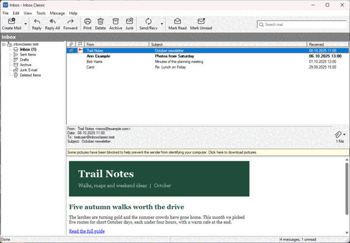

La ventana principal
Las partes de la ventana principal: la lista de carpetas, la lista de mensajes, el panel de lectura, la barra de herramientas y la barra de estado.

- La lista de carpetas, a la izquierda, contiene sus cuentas y sus carpetas. Una carpeta con correo sin leer aparece en negrita, con el número de mensajes no leídos tras su nombre. Con dos o más cuentas, Todas las bandejas de entrada aparece al principio.
- La lista de mensajes, arriba a la derecha, contiene los mensajes de la carpeta seleccionada. Los mensajes no leídos aparecen en negrita. Haga clic en el encabezado de una columna para ordenar por ella, y vuelva a hacer clic para invertir el orden.
- El panel de lectura, debajo de la lista, muestra el mensaje seleccionado.
- La barra de herramientas, arriba, contiene los comandos que más usa, como Redactar, Responder y Enviar y recibir, y el cuadro de búsqueda.
- La barra de estado, abajo, cuenta los mensajes e indica lo que está haciendo Inbox Classic, incluido el último problema que tuvo.
Arrastre los bordes entre las partes para cambiar su tamaño.
Los menús están en la barra de menús, debajo del título. Haga clic con el botón derecho en un mensaje, una carpeta o una cuenta para ver los comandos que actúan sobre él.
Una cuenta contraída, o una carpeta contraída que contiene otras carpetas, muestra los mensajes no leídos de las carpetas que oculta.
Al iniciarse, Inbox Classic muestra el mensaje más reciente de la Bandeja de entrada de la primera cuenta, o de Todas las bandejas de entrada cuando tiene varias cuentas.
Para abrir esta ayuda, elija Ayuda > Contenido o pulse F1. En otra ventana, la misma tecla abre el tema sobre esa ventana.